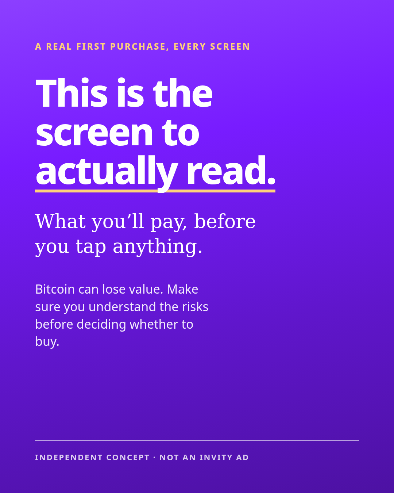
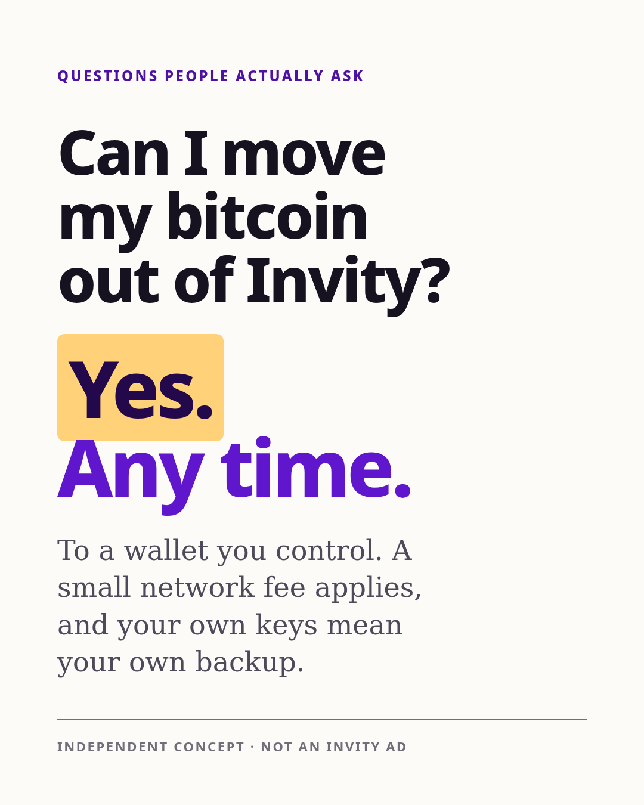
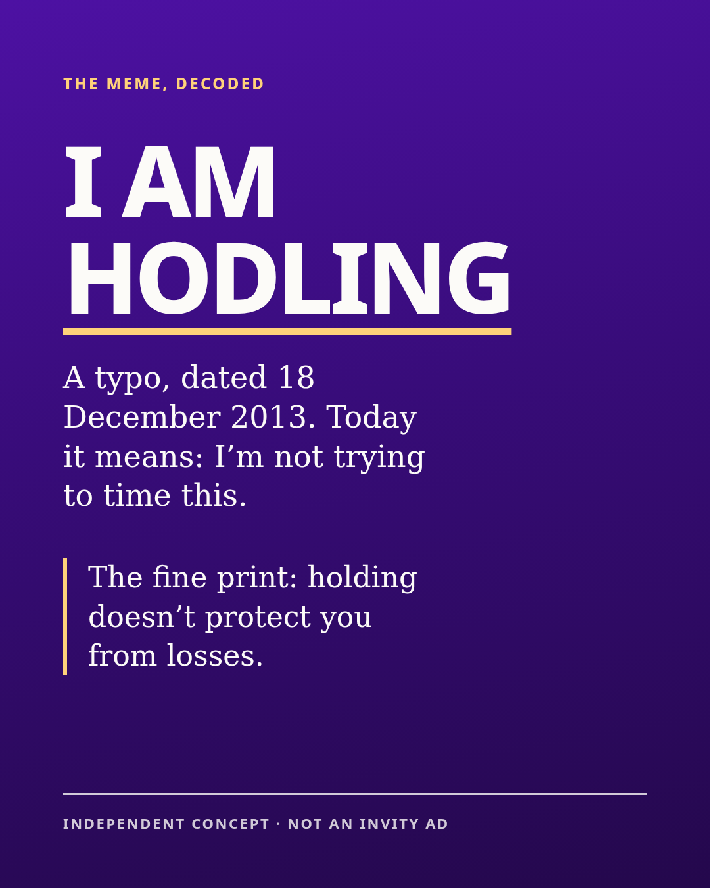

01 / Facebook preview
A first purchase, every screen
A 35-second walkthrough that slows down at the fee screen.
See Facebook concept Read the 35-second scriptIndependent application / Invity Social Media Lead
Hi, I’m Kitti. I’d start with someone who knows a little about Bitcoin and is weighing a first purchase. Show them the fee screen, where their bitcoin goes and how to withdraw it. Then give them room to decide.
01 / Creative portfolio
Three ways into the conversation. Each answers a question someone could send to a friend.

01 / Facebook preview
A 35-second walkthrough that slows down at the fee screen.
See Facebook concept Read the 35-second script
02 / LinkedIn preview
A plain-language carousel on withdrawing to a wallet you control.
Withdrawal wording pending product review.
See LinkedIn concept Read the withdrawal carousel
03 / X preview
The story behind HODL, with room for someone new to get the joke.
See X concept Read the HODL script02 / First 30 days
I’d start with a few well-made pieces and one clear question to test.
Talk to support and product. Read the comments, reviews and existing numbers.
Agree what we want to learn, then choose the market, the recording and the opening.
Review the questions and watch-through. Decide what to keep, change or drop.
Product and compliance, for what we can show and say about the app, fees and risk. Design, for templates. Native speakers in each market to check local copy (I’m Hungarian and work in English, so Hungarian is the only one I can check myself). And whoever knows the analytics setup.
I’d look at saves, shares, recurring questions and visits that explore the guide. Where tracking exists, I’d also look at first purchases, Auto Buy set-ups and later retention.
Attribution describes the path someone took. A controlled comparison can help us estimate what changed because of the creative. Retention and incrementality need a longer window.
See the fees-versus-custody test setup or try the budget forecast.
I’d plan language versions for the markets Invity serves, then start where we have review coverage and enough volume. Hungary is an option to confirm with Invity.
I started in social media agencies, where I managed brand communities, wrote social strategies and trained junior community managers. Through TomorrowPeople, I worked hands-on on paid campaigns, tracking and reporting for startups and nonprofits.
I’ve followed Bitcoin since 2017. I facilitated a communications workshop with the Wasabi Wallet team in 2018, and since October 2026 I’ve hosted Builder Calls at Bitvocation’s POW Lab. I also made a Bitcoin Meme Quiz for the community.
I like that Invity is Bitcoin-only and talks about holding for years. It gives social a concrete job: show how things work and give people enough context to make their own decision.
I left agency life to work with startups and tech communities. AI tools now take some of the repetitive production out of hands-on social, and I want to spend that time making things, reading the response and talking to people.